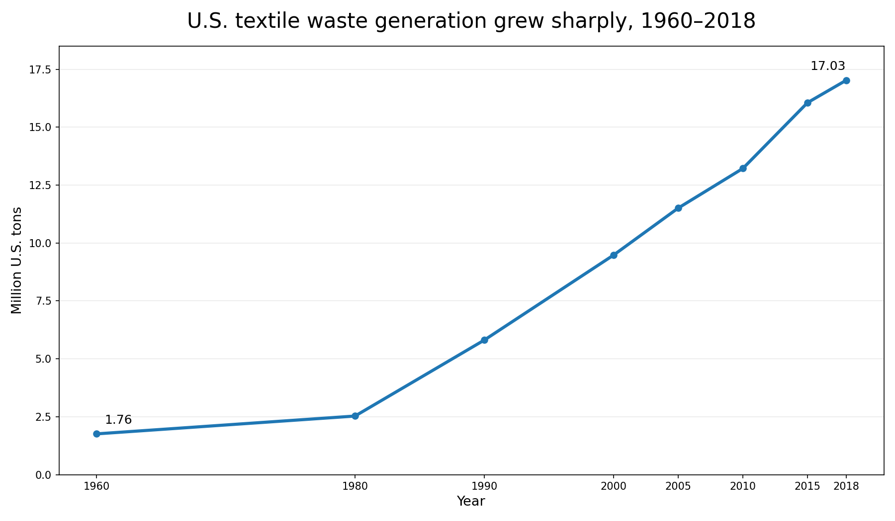
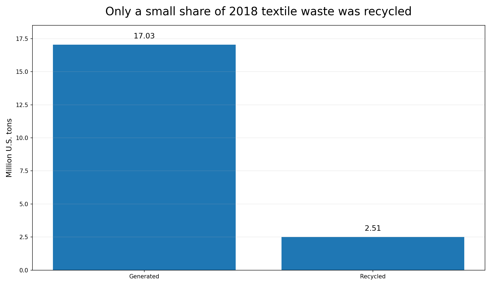

D1 · Story Frame
Claim: U.S. textile waste in the municipal solid waste stream grew dramatically from 1960 to 2018, and by 2018 landfilling was a much larger destination than recycling.
Data come from the U.S. Environmental Protection Agency's Textiles: Material-Specific Data. EPA reports the data in thousands of U.S. tons. For this story, I selected representative years from 1960–2018 and transposed the original table so years appear as rows. The reported values are not changed. EPA's generation estimates do not include textiles that are reused before entering the waste stream.
D2 · Editorial Figures


D3 · Accessible Data Table
| Year | Generated | Recycled | Combusted with energy recovery | Landfilled |
|---|---|---|---|---|
| 1960 | 1,760 | 50 | — | 1,710 |
| 1980 | 2,530 | 160 | 50 | 2,320 |
| 1990 | 5,810 | 660 | 880 | 4,270 |
| 2000 | 9,480 | 1,320 | 1,880 | 6,280 |
| 2005 | 11,510 | 1,830 | 2,110 | 7,570 |
| 2010 | 13,220 | 2,050 | 2,270 | 8,900 |
| 2015 | 16,060 | 2,460 | 3,060 | 10,540 |
| 2018 | 17,030 | 2,510 | 3,220 | 11,300 |
Source: U.S. EPA, Textiles: Material-Specific Data . Values are reported in thousands of U.S. tons. I selected eight representative years and transposed the EPA table so years appear as rows. No reported values were changed. The dash in the 1960 combustion cell is preserved from the EPA source table.
D4 · Responsive SVG
Source: U.S. EPA, Textiles: Material-Specific Data . Bar lengths are proportional to the reported 2018 tonnage.
D5 / D6 · Design System + Documentation
Design-system extension
This story reuses the existing Module 1 color, spacing, typography, border, and radius tokens. I only added the figure, table, source-note, and SVG patterns needed for this data story instead of creating a separate visual system.
Sources
Textile waste data: U.S. EPA, Textiles: Material-Specific Data
Asset Credits
Both editorial figures were created specifically for this project using U.S. EPA textile waste data. No third-party image assets were used.
Data Transformation
The EPA source table originally presents waste-management categories as rows and years as columns. For this story, I selected eight representative years and transposed the table so the years appear as rows. I did not alter the EPA's reported values. The figures and SVG convert the same reported values from thousands of U.S. tons into millions of tons for easier reading.